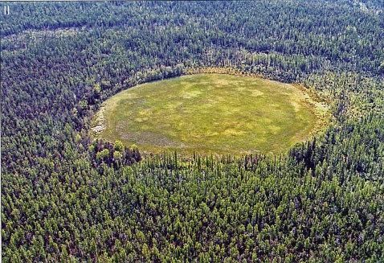

通古斯大爆炸
通古斯大爆炸（Tunguska event）是指1908年6月30日，發生在俄羅斯境內的一次巨大爆炸事件。這場爆炸推測是由一顆小型小行星或彗星碎片在空中爆炸引起的，爆炸的威力相當於10-15兆噸TNT的能量。爆炸的震波摧毀了超過2,000平方公里的森林，但由於當地偏遠，並未造成太多人員傷亡。
這次事件並未發現直接的撞擊坑，科學家認為爆炸源自高空的大氣層，而不是地面撞擊。通古斯大爆炸引發了全球範圍內的關注，成為研究小行星和彗星對地球潛在威脅的關鍵案例之一。